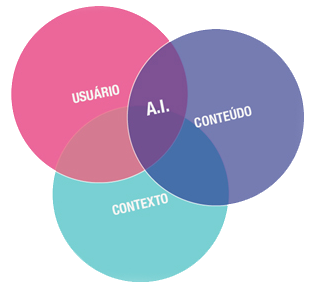

O que é "Estratégia de Conteudo"?
Basicamente, Estratégia de conteúdo é a prática de planejar a criação, entrega e gerência de conteúdo útil e interessante, podendo conter no site textos, dados, gráficos, vídeos, áudio, animações, PDF´s, streams, etc.
Para começar a montar a sua estratégia, devem ser feitas algumas perguntas para a elaboração: "Que conteúdo eu quero?", "Como devo estrutura-lo?". Depois que o conteúdo é criado, você deve pensar em quem vai consumir isso e até mesmo como ele vai ficar disponibilizado online. Depois disso, você deverá se preocupar com o gerenciamento dele, como por exemplo, qual será a avaliação dele e até mesmo como sempre mante-lo atualizado.
Não se esqueça também que sua logomarca influenciabastante na hora que os internautas forem olhar seu conteúdo, pois cada detalhe vai importar para uma boa avaliação.
Lembre-se também de trabalhar na arquitetura da informação do seu conteúdo, isso é o mais importante, pois com ele, o internauta terá um melhor desempenho na busca de informações pelo seu conteúdo.
Use também um bom escritor para que seu conteúdo seja escrito de forma profissional, isso é muito importante também pois demonstra a qualidade.